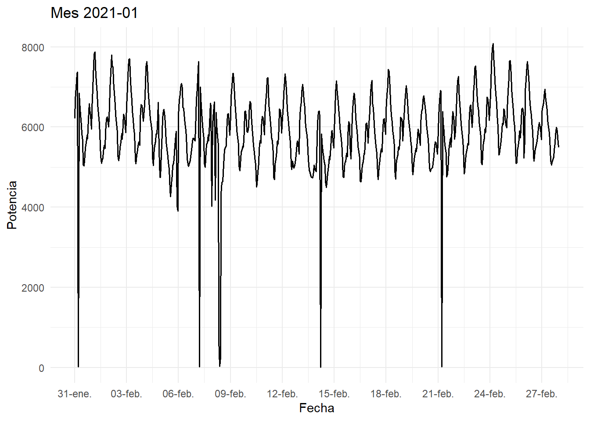
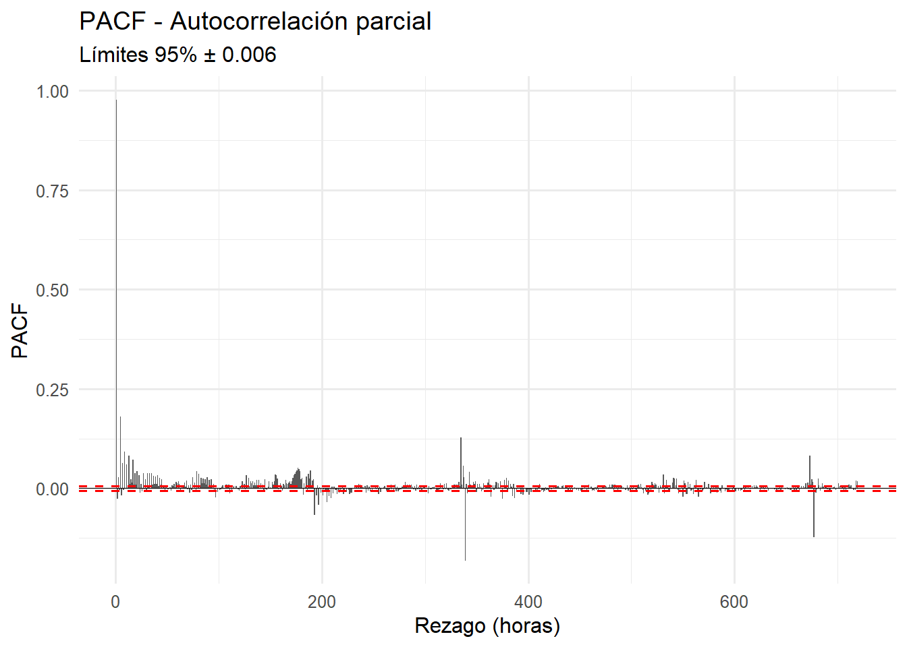
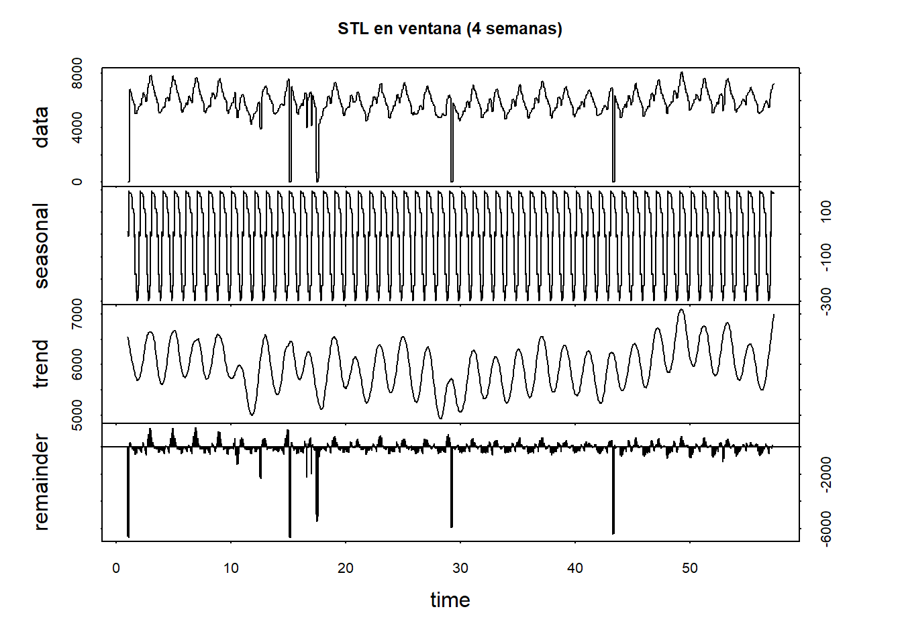

3 Análisis de Serie de Tiempo: Potencia Eléctrica Horaria
3.1 Contexto y objetivos
El estudio analiza una serie temporal de potencia eléctrica horaria entre 2018 y 2025.
El objetivo fue detectar patrones, ciclos y estacionalidades usando herramientas de R (lubridate, zoo, forecast) y visualizar la calidad de los datos (huecos, tendencias, estacionalidad, rezagos).
El conjunto de datos es altamente completo:
Completitud global: 99.48%.
Años con menos completitud: 2019 (97.9%) y 2021 (99.4%).
Años recientes (2022–2025): 100% de registros, sin huecos.
La idea es detectar patrones y ciclos del comportamiento de la potencia eléctrica.
3.2 Cargue de Librerías
##
## Adjuntando el paquete: 'dplyr'## The following objects are masked from 'package:stats':
##
## filter, lag## The following objects are masked from 'package:base':
##
## intersect, setdiff, setequal, union##
## Adjuntando el paquete: 'lubridate'## The following objects are masked from 'package:base':
##
## date, intersect, setdiff, union##
## Adjuntando el paquete: 'scales'## The following object is masked from 'package:readr':
##
## col_factor##
## Adjuntando el paquete: 'zoo'## The following objects are masked from 'package:base':
##
## as.Date, as.Date.numeric## Registered S3 method overwritten by 'quantmod':
## method from
## as.zoo.data.frame zoo3.3 Lectura y preparación de los datos
csv_dir <- "C:/Users/Lenovo/PUJ Cali/OSCAR VELASQUEZ CHALA - Proyecto Aplicado - Proy. Demanda Electrica/2. Fuentes de Datos"
csv_name <- "015 SOLO POTENCIA PARA SUBI A BOOKDOWN.csv"
csv_path <- file.path(csv_dir, csv_name)
time_col <- "FECHA"
y_col <- "VALOR_IMPUTADO"
TZ <- "America/Bogota"
# Lectura robusta
df <- tryCatch(
readr::read_csv(csv_path, show_col_types = FALSE),
error = function(e) readr::read_csv2(csv_path, show_col_types = FALSE)
)
stopifnot(time_col %in% names(df), y_col %in% names(df))
# Parseo de fechas (varios formatos)
df[[time_col]] <- parse_date_time(
df[[time_col]],
orders = c("ymd HMS","ymd HM","dmy HMS","dmy HM","ymd","dmy"),
tz = TZ
)
# A numérico
df[[y_col]] <- suppressWarnings(readr::parse_number(as.character(df[[y_col]])))
# Malla horaria completa (sin imputar, para marcar huecos)
df0 <- df %>% filter(!is.na(.data[[time_col]])) %>% select(!!time_col, !!y_col) %>% arrange(.data[[time_col]])
full_time <- tibble(!!time_col := seq(min(df0[[time_col]]), max(df0[[time_col]]), by = "1 hour"))
df_full <- full_time %>%
left_join(df0, by = time_col) %>%
mutate(is_na = is.na(.data[[y_col]])) %>%
arrange(.data[[time_col]])
summary(df_full[[y_col]])## Min. 1st Qu. Median Mean 3rd Qu. Max. NA's
## 0 1241 3550 3244 4996 10000 610## Proporción de NA: 0.0051413023.4 Funciones auxiliares de visualización de la serie de tiempo
# Unir horas NA contiguas en bandas
na_spans_runs <- function(x_time, is_na_logical) {
r <- rle(is_na_logical)
ed <- cumsum(r$lengths); st <- ed - r$lengths + 1
tibble(is_na = r$values, i_start = st, i_end = ed) %>%
dplyr::filter(is_na) %>%
transmute(xmin = x_time[i_start], xmax = x_time[i_end] + hours(1))
}
# Agregación genérica sin imputar
tagrega <- function(data, unit, time_col, y_col, tz = TZ) {
data %>%
mutate(period = floor_date(.data[[time_col]], unit)) %>%
group_by(period) %>%
summarise(value = mean(.data[[y_col]], na.rm = TRUE), .groups = "drop")
}3.5 Vista general del comportamiento de la potencia eléctrica por escalas (diaria, semanal, mensual, anual)
na_runs <- na_spans_runs(df_full[[time_col]], df_full$is_na)
plot_df <- bind_rows(
tagrega(df_full, "day", time_col, y_col) %>% mutate(freq = "Diaria"),
tagrega(df_full, "week", time_col, y_col) %>% mutate(freq = "Semanal"),
tagrega(df_full, "month", time_col, y_col) %>% mutate(freq = "Mensual"),
tagrega(df_full, "year", time_col, y_col) %>% mutate(freq = "Anual")
) %>% mutate(freq = factor(freq, levels = c("Diaria","Semanal","Mensual","Anual")))
ggplot() +
geom_rect(data = na_runs,
aes(xmin = xmin, xmax = xmax, ymin = -Inf, ymax = Inf),
inherit.aes = FALSE, fill = "red", alpha = 0.25) +
geom_line(data = plot_df,
aes(x = period, y = value), linewidth = 0.7, na.rm = TRUE) +
facet_wrap(~ freq, scales = "free_x", ncol = 2) +
scale_x_datetime(labels = date_format("%Y"), date_breaks = "1 year") +
labs(title = "Potencia con huecos (NA)",
subtitle = "Bandas rojas = periodos con NA en la serie horaria original",
x = "Tiempo", y = "Potencia") +
theme_minimal(base_size = 11)Curva de Potencia Diaria: muestra alta variabilidad horaria con picos bien definidos, evidenciando que la potencia cambia fuertemente a lo largo del día.
Curva de Potencia Semanal: suaviza los ciclos, pero aún se aprecian repeticiones cada pocos días, sugiriendo un patrón operativo estable.
Curva de Potencia Mensual: las oscilaciones se atenúan, revelando la tendencia global; los huecos rojos (NA) se observan concentrados en pocos periodos.
Curva de Potencia Anual: la línea muestra el comportamiento global a largo rango: valores medios estables sin deriva significativa, lo que sugiere una operación controlada y sin aumento sostenido del consumo.
La serie mantiene un patrón estacional fuerte (diario y semanal) y una tendencia global estacionaria. Los huecos (en rojo) son mínimos y no distorsionan las medias agregadas.
3.6 Curvas de potencia eléctrica por periodo (día, semana, mes, año)
# Día
dia_obj <- as.Date("2023-02-01")
ini_dia <- as.POSIXct(dia_obj, tz = TZ); fin_dia <- ini_dia + days(1)
df_day <- df_full %>% filter(.data[[time_col]] >= ini_dia, .data[[time_col]] < fin_dia)
na_day <- na_spans_runs(df_day[[time_col]], df_day$is_na)
g_day <- ggplot() +
geom_rect(data = na_day, aes(xmin = xmin, xmax = xmax, ymin=-Inf, ymax=Inf),
inherit.aes = FALSE, fill="red", alpha = 0.35) +
geom_line(data = filter(df_day, !is_na), aes_string(x=time_col, y=y_col), linewidth=0.8) +
scale_x_datetime(limits=c(ini_dia, fin_dia), date_labels="%H:%M", breaks=seq(ini_dia, fin_dia, by="2 hour")) +
labs(title=paste0("Curva horaria — ", dia_obj), x="Hora", y="Potencia") + theme_minimal()
g_day- Día: 1 febrero 2023:Curva con forma sinusoidal: potencia baja en la madrugada, aumento progresivo durante el día, pico en horas centrales y descenso nocturno. Refleja un ciclo operativo típico diario.
# Semana
semana_ref <- as.Date("2021-02-01")
ini_sem <- as.POSIXct(floor_date(semana_ref, "week", week_start=1), tz=TZ)
fin_sem <- ini_sem + weeks(1)
df_week <- df_full %>% filter(.data[[time_col]] >= ini_sem, .data[[time_col]] < fin_sem)
na_week <- na_spans_runs(df_week[[time_col]], df_week$is_na)
g_week <- ggplot() +
geom_rect(data = na_week, aes(xmin = xmin, xmax = xmax, ymin=-Inf, ymax=Inf),
inherit.aes = FALSE, fill="red", alpha = 0.35) +
geom_line(data = filter(df_week, !is_na), aes_string(x=time_col, y=y_col), linewidth=0.8) +
scale_x_datetime(limits=c(ini_sem, fin_sem), date_labels="%a %d", breaks=seq(ini_sem, fin_sem, by="1 day")) +
labs(title=paste0("Semana del ", ini_sem), x="Fecha", y="Potencia") + theme_minimal()
g_week- Semana: 1–7 febrero 2021: Repetición diaria clara, pero con leves diferencias entre días. Puede reflejar cambios de carga entre jornadas laborales y fines de semana.
# Mes
mes_ref <- as.Date("2021-02-01")
ini_mes <- as.POSIXct(floor_date(mes_ref, "month"), tz=TZ); fin_mes <- as.POSIXct(ceiling_date(mes_ref, "month"), tz=TZ)
df_month <- df_full %>% filter(.data[[time_col]] >= ini_mes, .data[[time_col]] < fin_mes)
na_month <- na_spans_runs(df_month[[time_col]], df_month$is_na)
g_month <- ggplot() +
geom_rect(data = na_month, aes(xmin = xmin, xmax = xmax, ymin=-Inf, ymax=Inf),
inherit.aes = FALSE, fill="red", alpha = 0.25) +
geom_line(data = filter(df_month, !is_na), aes_string(x=time_col, y=y_col), linewidth=0.6) +
scale_x_datetime(limits=c(ini_mes, fin_mes), date_labels="%d-%b", breaks=seq(ini_mes, fin_mes, by="3 days")) +
labs(title=paste0("Mes ", format(ini_mes, '%Y-%m')), x="Fecha", y="Potencia") + theme_minimal()
g_month
- Mes: febrero 2021: Patrón reiterado de picos semanales. Los huecos rojos (NA) marcan interrupciones puntuales sin afectar la tendencia global.
# Año (panel único)
anio_ref <- 2021
ini_anio <- as.POSIXct(ymd(paste0(anio_ref, "-01-01")), tz=TZ); fin_anio <- as.POSIXct(ymd(paste0(anio_ref+1, "-01-01")), tz=TZ)
df_year <- df_full %>% filter(.data[[time_col]] >= ini_anio, .data[[time_col]] < fin_anio)
na_year <- na_spans_runs(df_year[[time_col]], df_year$is_na)
g_year <- ggplot() +
geom_rect(data = na_year, aes(xmin = xmin, xmax = xmax, ymin=-Inf, ymax=Inf),
inherit.aes = FALSE, fill="red", alpha = 0.20) +
geom_line(data = filter(df_year, !is_na), aes_string(x=time_col, y=y_col), linewidth=0.3) +
scale_x_datetime(limits=c(ini_anio, fin_anio), date_labels="%b", breaks=seq(ini_anio, fin_anio, by="1 month")) +
labs(title=paste0("Año ", anio_ref), x="Mes", y="Potencia") + theme_minimal()
g_year- Año: 2021: Oscilaciones estacionales sin tendencia definida. No se observan desviaciones estructurales.
A nivel temporal, la potencia responde a ciclos regulares con comportamiento casi periódico.
3.7 Promedios móviles
Promedios móviles sobre la serie horaria (imputada solo para continuidad visual con na.interp).
# --- Promedios móviles coloreados (24h, 168h, 720h) ---
# 1) Crea la serie imputada y los MAs
df_impu <- df_full %>% mutate(val_impu = forecast::na.interp(.data[[y_col]]))
df_ma <- df_impu %>%
transmute(
time = .data[[time_col]],
y = as.numeric(val_impu),
`MA 24h` = zoo::rollmean(val_impu, k = 24, align = "right", fill = NA),
`MA 168h` = zoo::rollmean(val_impu, k = 168, align = "right", fill = NA),
`MA 720h` = zoo::rollmean(val_impu, k = 720, align = "right", fill = NA)
)
# 2) Pasar los MAs a formato largo para mapear color por serie
library(tidyr)
df_ma_long <- df_ma %>%
tidyr::pivot_longer(cols = c(`MA 24h`,`MA 168h`,`MA 720h`),
names_to = "Serie", values_to = "Valor")
# 3) Graficar: original en gris, MAs en colores
ggplot(df_ma, aes(x = time)) +
# Serie original
geom_line(aes(y = y), color = "grey80", linewidth = 0.2, alpha = 0.6) +
# Promedio móvil corto (24h) — se dibuja primero
geom_line(aes(y = `MA 24h`), color = "#1f77b4", linewidth = 0.6, alpha = 0.8) +
# Promedio móvil intermedio (168h) — encima de la azul
geom_line(aes(y = `MA 168h`), color = "#2ca02c", linewidth = 0.9, alpha = 0.9) +
# Promedio móvil largo (720h) — encima de las anteriores
geom_line(aes(y = `MA 720h`), color = "#d62728", linewidth = 1.1, alpha = 1) +
labs(
title = "Promedios móviles (24h, 168h, 720h)",
subtitle = "Curvas suavizadas de corto, mediano y largo plazo",
x = "Tiempo", y = "Potencia"
) +
theme_minimal(base_size = 12) +
theme(plot.title = element_text(face = "bold"))- La línea gris (serie original) muestra picos horarios abruptos.
- La línea azul (media móvil 24h) suaviza el ruido diario.
- La línea verde (media móvil 168h) identifica la tendencia semanal.
- La línea roja (media móvil 720h) resume la tendencia mensual.
No se observan rupturas ni tendencias marcadas. Las tres medias convergen en un rango estable.
3.8 Rezagos (lags) y autocorrelación
# --- Rezagos a nivel horario (1, 24, 168, 720) ---
df_lags <- df_impu %>%
transmute(
time = .data[[time_col]],
y = as.numeric(val_impu),
lag_1 = dplyr::lag(as.numeric(val_impu), 1),
lag_24 = dplyr::lag(as.numeric(val_impu), 24),
lag_168 = dplyr::lag(as.numeric(val_impu), 168),
lag_720 = dplyr::lag(as.numeric(val_impu), 720)
)
# Correlaciones
cors <- c(
cor(df_lags$y, df_lags$lag_1, use = "complete.obs"),
cor(df_lags$y, df_lags$lag_24, use = "complete.obs"),
cor(df_lags$y, df_lags$lag_168, use = "complete.obs"),
cor(df_lags$y, df_lags$lag_720, use = "complete.obs")
)
setNames(round(cors, 3), c("lag1","lag24","lag168","lag720"))## lag1 lag24 lag168 lag720
## 0.977 0.802 0.766 0.749- Lag 1: 0.977 → fuerte dependencia entre horas consecutivas.
- Lag 24: 0.802 → patrón diario repetitivo.
- Lag 168: 0.766 → correlación semanal clara.
- Lag 720: 0.749 → correlación mensual aún significativa.
Los altos valores confirman una autocorrelación fuerte y múltiple (hora, día, semana, mes). Esto valida la presencia de estacionalidad múltiple y un comportamiento cíclico persistente.
#ACF y PACF: Análisis de Autocorrelación
library(ggplot2)
# 1) Serie imputada -> vector numérico sin NA
serie_vec <- as.numeric(df_impu$val_impu)
serie_vec <- serie_vec[!is.na(serie_vec)]
# 2) Definir lag máximo (p.ej. 30 días = 24*30)
max_lag <- 24 * 30
# 3) Calcular ACF y PACF sin graficar
acf_obj <- acf(serie_vec, lag.max = max_lag, plot = FALSE)
pacf_obj <- pacf(serie_vec, lag.max = max_lag, plot = FALSE)
# 4) Pasar a data frame (ojo: ambos traen valores en $acf)
acf_df <- data.frame(
lag = as.numeric(acf_obj$lag),
acf = as.numeric(acf_obj$acf)
)
pacf_df <- data.frame(
lag = as.numeric(pacf_obj$lag), # lags desde 1 normalmente
pacf = as.numeric(pacf_obj$acf) # valores de PACF están en $acf
)
# 5) Bandas de confianza 95%
n_eff <- length(serie_vec)
ci <- 1.96 / sqrt(n_eff)
# 6) Graficar con ggplot2
# --- ACF ---
ggplot(acf_df, aes(x = lag, y = acf)) +
geom_col(width = 0.9) +
geom_hline(yintercept = 0, linewidth = 0.3) +
geom_hline(yintercept = c(-ci, ci), linetype = "dashed", color = "red") +
labs(title = "ACF - Autocorrelación de la serie horaria",
subtitle = paste("Límites 95% ±", round(ci, 3)),
x = "Rezago (horas)", y = "ACF") +
theme_minimal(base_size = 12)
El gráfico ACF muestra la correlación de la serie de potencia horaria consigo misma a diferentes rezagos (lags), medidos en horas.
- En el rezago 0 la autocorrelación es 1, cada punto está completamente correlacionado consigo mismo.
- Se observa una autocorrelación muy alta y sostenida en casi todos los rezagos, con valores cercanos a 0.75–0.80 hasta aproximadamente 700 horas (~30 días).
- Esta persistencia indica que la serie mantiene una dependencia temporal fuerte, es decir, los valores pasados tienen gran influencia sobre los futuros.
- Se aprecian picos regulares (aprox. cada 24, 168 y 720 rezagos), lo que evidencia patrones estacionales diarios, semanales y mensuales.
- Las bandas rojas horizontales representan los límites de significancia al 95% (±0.006). Todos los valores de la ACF están muy por encima de esas bandas, lo que confirma que la autocorrelación es estadísticamente significativa en todos los horizontes analizados.
La serie presenta una estructura fuertemente autocorrelacionada, con periodicidad marcada y ciclos regulares. Esto indica que no es una serie puramente aleatoria, sino que está dominada por una estacionalidad sistemática de carácter diario y semanal.
# --- PACF ---
ggplot(pacf_df, aes(x = lag, y = pacf)) +
geom_col(width = 0.9) +
geom_hline(yintercept = 0, linewidth = 0.3) +
geom_hline(yintercept = c(-ci, ci), linetype = "dashed", color = "red") +
labs(title = "PACF - Autocorrelación parcial",
subtitle = paste("Límites 95% ±", round(ci, 3)),
x = "Rezago (horas)", y = "PACF") +
theme_minimal(base_size = 12)
El gráfico PACF muestra la correlación entre la serie y sus rezagos una vez eliminada la influencia de los rezagos intermedios.
- Se observa un pico alto en el primer rezago (lag = 1), lo que indica una fuerte dependencia inmediata (efecto de la hora anterior).
- Después del primer rezago, los valores de la PACF caen rápidamente y se mantienen cerca de cero, salvo algunos picos débiles en rezagos aproximadamente iguales a 24, 168 y 720 horas, que corresponden a efectos estacionales.
- Estos picos secundarios son pequeños pero significativos, lo que sugiere una estacionalidad múltiple (día, semana, mes).
La PACF confirma que el comportamiento actual de la potencia depende principalmente de su valor en la hora anterior (AR(1)), junto con componentes estacionales de largo plazo.
3.9 Estacionalidad (gráficos y descomposición)
Para descomponer, usamos un objeto ts regular con frecuencia diaria (24), semanal (24*7) o anual (24*365). Utilizamos la serie imputada val_impu para evitar huecos.
# Construir ts con frecuencia diaria (24 por ciclo)
start_time <- min(df_impu[[time_col]], na.rm = TRUE)
Indice.ts.diaria <- ts(df_impu$val_impu,
start = c(year(start_time), hour(start_time) + 1),
frequency = 24)
# Gráficos estacionales (por hora del día y por mes)
autoplot(Indice.ts.diaria) + ggtitle("Serie ts (freq=24)")Serie ts (freq = 24) La serie presenta alta variabilidad (cada día cambia mucho), con rupturas o cambios estructurales en determinados años. Esto indica que el sistema de potencia tiene patrones por periodos largos más que una estacionalidad estricta diaria.
# STL y gráficos estacionales
fit_stl <- stl(Indice.ts.diaria, s.window = "periodic")
plot(fit_stl, main = "Descomposición STL (frecuencia diaria)") Decomposición STL frecuencia diaria
* data: Muestra la potencia total observada con todas sus fluctuaciones.
* seasonal: Se observa una banda negra uniforme, porque la variabilidad de la serie es mucho mayor que la amplitud de la estacionalidad.
* trend: Se observan periodos con incrementos o descensos sostenidos de potencia
* remainder: Presenta la variabilidad de corto plazo, los picos, fallos de medición y valores atípicos
Decomposición STL frecuencia diaria
* data: Muestra la potencia total observada con todas sus fluctuaciones.
* seasonal: Se observa una banda negra uniforme, porque la variabilidad de la serie es mucho mayor que la amplitud de la estacionalidad.
* trend: Se observan periodos con incrementos o descensos sostenidos de potencia
* remainder: Presenta la variabilidad de corto plazo, los picos, fallos de medición y valores atípicos
# Define un inicio dinámico (o fija una fecha)
ini_zoom <- as.POSIXct("2021-02-01", tz = TZ)
fin_zoom <- ini_zoom + lubridate::weeks(4)
slice <- df_impu %>%
dplyr::filter(.data[[time_col]] >= ini_zoom, .data[[time_col]] < fin_zoom)
ts24_zoom <- ts(as.numeric(slice$val_impu), frequency = 24)
fit_zoom <- stl(ts24_zoom, s.window = "periodic", robust = TRUE)
plot(fit_zoom, range.bars = FALSE, main = "STL en ventana (4 semanas)") Decomposición STL en una ventana de 4 semanas
- data:
- Se observan oscilaciones regulares de subida y bajada cada 24 horas, lo cual refleja el patrón de potencia diario.
- Hay algunos huecos o caídas abruptas que corresponden a datos faltantes o interrupciones de registro de los datos.
- La serie se mueve alrededor de una media aproximada de 5000–6000 KW, con variaciones diarias de alrededor de ±1000 – 1500 KW.
- seasonal:
- Se observa una forma de onda repetitiva tipo sinusoinal, con un ciclo por día.
- La serie tiene una estacionalidad clara diaria: la potencia sube en ciertas horas (probablemente durante el día laboral) y baja en otras (probablemente por la noche).
- La amplitud del patrón se mantiene bastante constante, lo que sugiere que la estacionalidad diaria no cambia mucho entre semanas.
- trend:
- Se observan ondas de mayor periodo que podrían corresponder a variaciones semanales.
- La tendencia muestra subidas y bajadas lentas, lo que indica variabilidad estructural o cambios progresivos en el nivel medio de potencia.
- La escala vertical está alrededor de los 5000–7000 KW.
- remainder:
- Los picos hacia arriba o abajo representan anomalías, errores o eventos inusuales.
- Se observan algunos picos negativos fuertes, que podrían deberse a interrupciones o registros incorrectos de potencia (NA o 0).
- El resto del residuo oscila cerca de cero, lo cual es deseable (significa que la mayor parte de la variabilidad fue capturada por tendencia + estacionalidad).
En resumen, la serie de potencia tiene una estacionalidad diaria fuerte, una tendencia suave semanal, y ruido moderado.
3.10 Indicadores resumidos
# Completitud global
comp_global <- 1 - mean(is.na(df_full[[y_col]]))
# Completitud por año
comp_anio <- df_full %>%
dplyr::group_by(anio = lubridate::year(.data[[time_col]])) %>%
dplyr::summarise(
comp = 1 - mean(is.na(.data[[y_col]])),
n_obs = dplyr::n(),
.groups = "drop"
)
comp_global## [1] 0.9948587## # A tibble: 8 × 3
## anio comp n_obs
## <dbl> <dbl> <int>
## 1 2018 0.996 38330
## 2 2019 0.979 15639
## 3 2020 0.997 17424
## 4 2021 0.994 11444
## 5 2022 1 9793
## 6 2023 1 9893
## 7 2024 1 9712
## 8 2025 1 6412| Año | Completitud | Observaciones |
|---|---|---|
| 2018 | 99.6% | Muy buena cobertura |
| 2019 | 97.9% | Ligera pérdida de datos |
| 2020 | 99.7% | Excelente |
| 2021 | 99.4% | Alta |
| 2022–2025 | 100% | Sin huecos |
3.11 Conclusiones
- La serie de potencia es altamente estacionaria y cíclica.
- Existen ciclos claros de 24 y 168 horas, reflejando comportamientos diarios y semanales.
- No se detectan tendencias de crecimiento, lo que indica estabilidad en la operación.
- Los promedios móviles confirman consistencia estructural.
- La descomposición STL y la ACF refuerzan la idea de una estacionalidad regular y predecible.
- La calidad del registro (99.5%) garantiza confiabilidad para análisis predictivos.